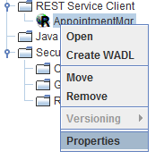
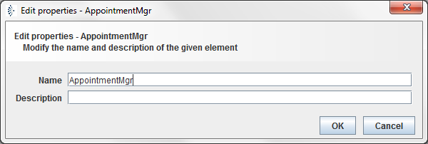
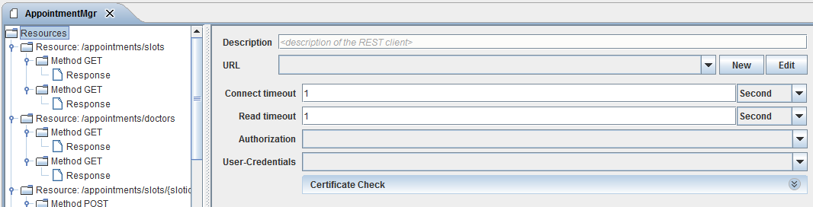

Configuration

Topic content
1.Right Click on the created REST Service Client in designer menu and select Properties option in order to change name an description of your REST Service Client.
 
Figure 50 – REST Service Client - edit properties dialog
2.Double Click on your REST Service Client under REST Service Client option in designer menu, to open the configuration panel and select the parent node Resources

Figure 51 – REST Service Client - resources configuration panel
•Description of the REST Service client object.
•URL of the REST Service client object determines the base path of your REST method calls. The value of the URL environment entry.
•Connection timeout determines the connection timeout of external REST web service.
•Read Timeout determines the read timeout of external REST web service.
•Authorization type for the selected REST web service.
•User-Credentials settings based on previously selected authorization value. The value of the existing Credential entry.
Note: On the left side of the image above, you can see the created elements the REST Service client. The parent node of the client is the Resources element which contains the URL information of your Rest web service. Resource child element contains more detail information about URL-Pattern of web service calls together with the list of implemented REST methods.